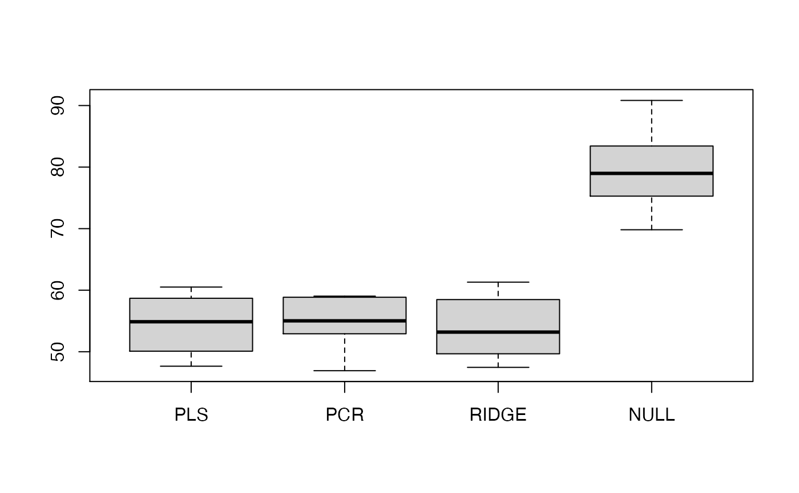
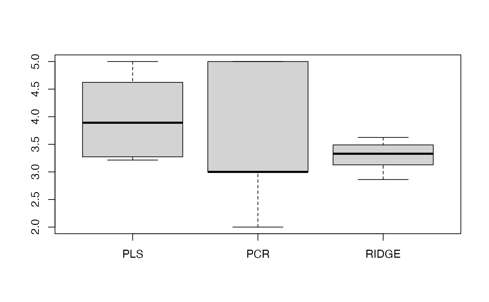

R/benchmark.regression.R
benchmark.regression.RdThis function computes the test error over several runs for (a) PLS, (b) PCR
(c) Ridge Regression and (d) the null model, that is the mean of y.
In the first three cases, the optimal model is selected via
cross-validation.
benchmark.regression( X, y, m = ncol(X), R = 20, ratio = 0.8, verbose = TRUE, k = 10, nsamples = nrow(X), use.kernel = FALSE, supervised = FALSE )
| X | matrix of predictor observations. |
|---|---|
| y | vector of response observations. The length of |
| m | maximal number of components for PLS. Default is |
| R | number of runs. Default is 20. |
| ratio | ratio no of training examples/(no of training examples + no of test examples). Default is 0.8 |
| verbose | If |
| k | number of cross-validation splits. Default is 10. |
| nsamples | number of data points. Default is |
| use.kernel | Use kernel representation for PLS? Default is
|
| supervised | Should the principal components be sorted by decreasing squared correlation to the response? Default is FALSE. |
data frame of size R x 4. It contains the test error for the four different methods for each of the R runs.
data frame of size R x 4. It contains the optimal model parameters for the four different methods for each of the R runs.
data frame of size R x 4. It
contains the Degrees of Freedom (corresponding to M) for the four
different methods for each of the R runs.
matrix of size R x (ncol(X+1)). It contains the SSR for PLS for each of the R runs.
matrix of size R x (ncol(X+1)). It contains the SSR for PCR for each of the R runs.
matrix of size R x (ncol(X+1)). It contains the Degrees of Freedom for PLS for all components for each of the R runs.
The function computes the test error, the cross-validation-optimal model parameters, their corresponding Degrees of Freedom, and the sum-of-squared-residuals (SSR) for PLS and PCR.
Kraemer, N., Sugiyama M. (2011). "The Degrees of Freedom of Partial Least Squares Regression". Journal of the American Statistical Association 106 (494) https://www.tandfonline.com/doi/abs/10.1198/jasa.2011.tm10107
Nicole Kraemer
# \donttest{ # Boston Housing data library(MASS) data(Boston) X<-as.matrix(Boston[,1:4]) # select the first 3 columns as predictor variables y<-as.vector(Boston[,14]) my.benchmark<-benchmark.regression(X,y,ratio=0.5,R=10,k=5)#> iteration no 1 #> iteration no 2 #> iteration no 3 #> iteration no 4 #> iteration no 5 #> iteration no 6 #> iteration no 7 #> iteration no 8 #> iteration no 9 #> iteration no 10# }